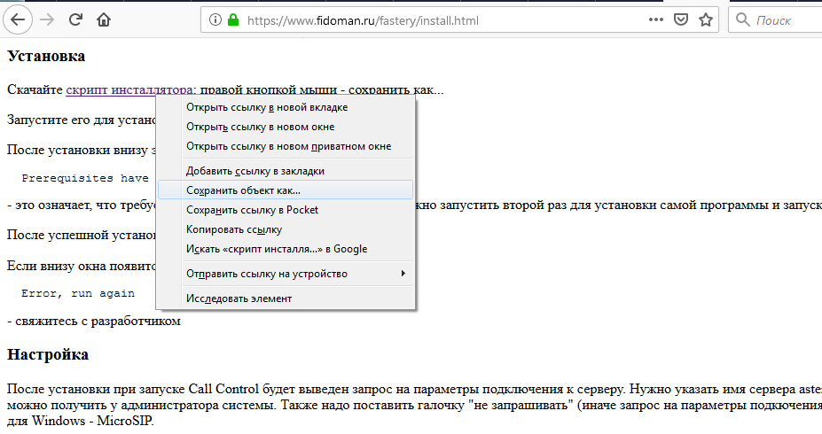
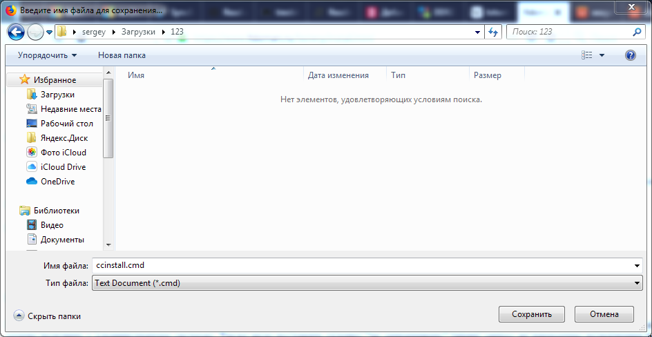
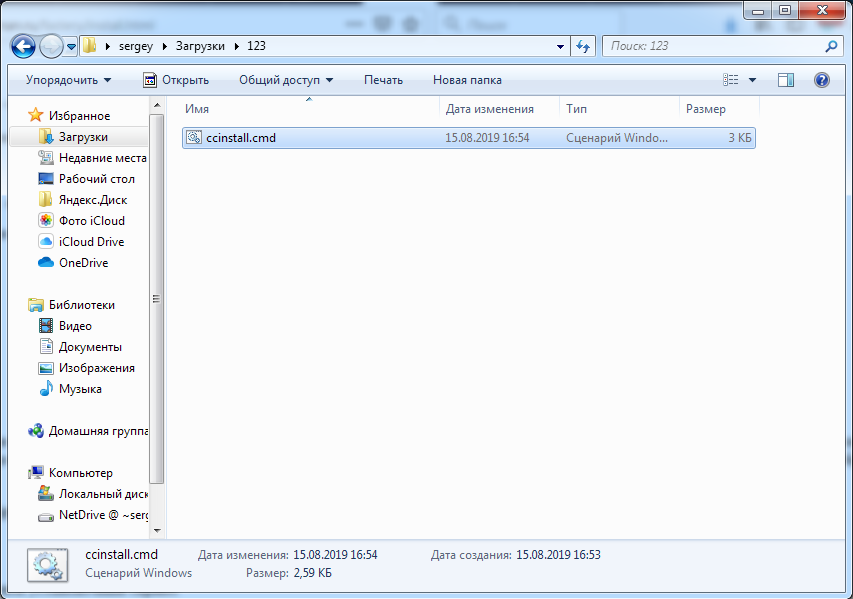
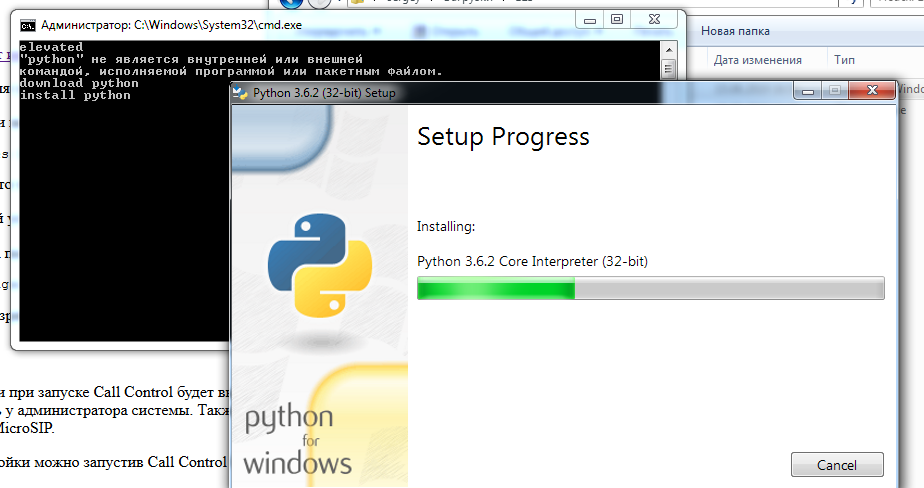
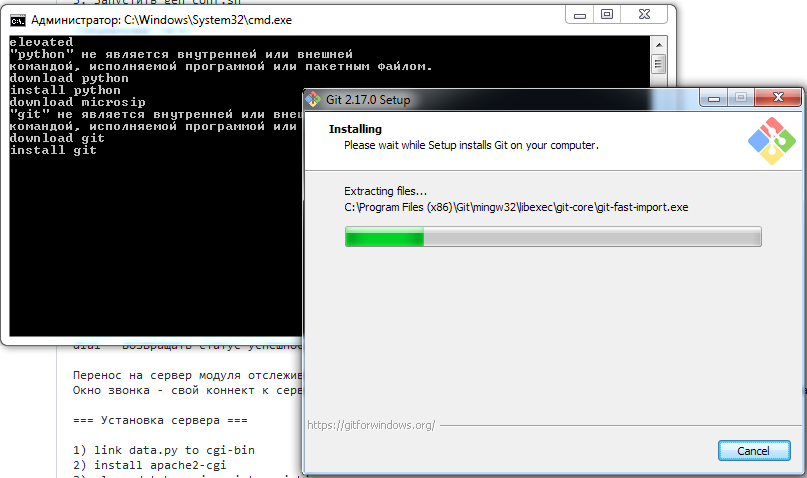
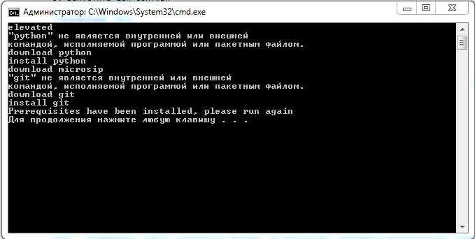
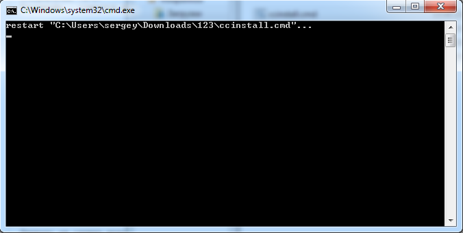
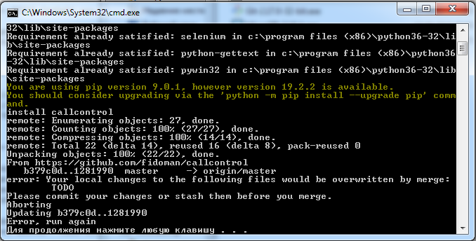

Скачайте скрипт инсталлятора: правой кнопкой мыши - сохранить как...
 После скачивания убедитесь, что он скачался как .cmd файл. Если к файлу добавилось расширение .txt, переименуйте его, убрав это расширение. Запустите его для установки необходимых пререквизитов. При запуске появится запрос на выполнение с повышенными привелегиями - нужно подтвердить его.
  После установки внизу экрана появится сообщение:
Prerequisites have been installed, please run again
- это означает, что требуемые программы установлены и скрипт нужно запустить второй раз для установки самой программы и запуска настройки.
После успешной установки будет надпись Part 2 OK
Если внизу окна появится сообщение
Error, run again
- свяжитесь с разработчиком
После установки при запуске Call Control будет выведен запрос на параметры подключения к серверу. Нужно указать имя сервера asterisk, внутренний номер оператора и его пароль. Эти данные можно получить у администратора системы. Также надо поставить галочку "не запрашивать" (иначе запрос на параметры подкючения будет появляться при каждом запуске) и выбрать тип клиента, для Windows - MicroSIP.
Изменить настройки можно запустив Call Control Configuration
Для обновления программы необходимо ещё раз запустить установочный скрипт.